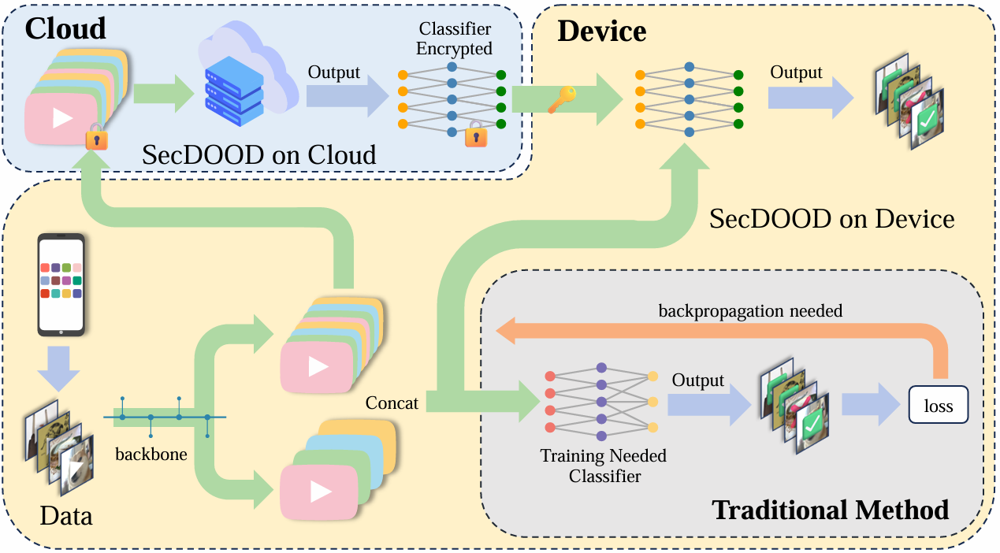
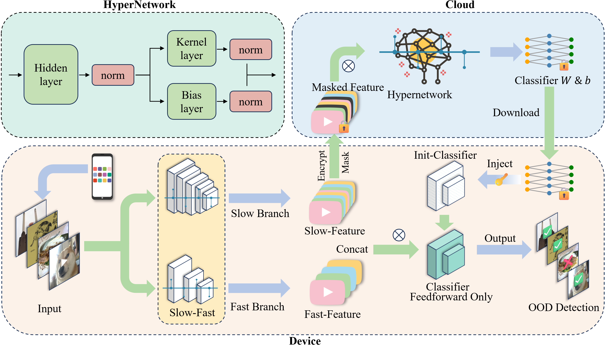

Secure On-Device Video OOD Detection
A privacy-conscious framework for multimodal out-of-distribution detection without on-device backpropagation.


A privacy-conscious framework for multimodal out-of-distribution detection without on-device backpropagation.

Deliver on-device video out-of-distribution detection without any device-side backpropagation while preserving user privacy.
A cloud-hosted HyperNetwork generates device-specific classifier weights from an encrypted subset of selected feature channels. Devices run forward-only inference; gradients and raw data never leave the device.
Raw videos and full feature tensors remain local. Dynamic channel sampling plus selective encryption minimize bandwidth and crypto overhead with negligible accuracy loss.
Drop-in support for common OOD scores (MSP, Energy, VIM) and modalities (RGB, optical flow, audio). Works for both near- and far-OOD settings.
Across HMDB51, UCF101, EPIC-Kitchens, HAC, and Kinetics-600, SecDOOD improves AUROC and reduces FPR@95 compared to local post-processing baselines—without any on-device training.
SecDOOD introduces a secure collaboration paradigm between cloud services and resource-constrained devices. By delegating heavy-weight optimization to the cloud, SecDOOD enables reliable, low-latency out-of-distribution detection on the edge while preserving data privacy. The framework scales to large multimodal datasets and eliminates the need for device-side backpropagation.
Integrates RGB video, optical flow, and audio cues (when available) for robust detection under diverse conditions.
Performs forward-only OOD detection on-device; raw data and full feature tensors never leave the device.
A cloud-hosted HyperNetwork H produces device-specific classifier weights (Θd) from an encrypted subset of device features, enabling per-device adaptation without local training.
The device ranks feature channels via Shapley approximations and homomorphically encrypts the top 50% while masking the rest, cutting bandwidth and crypto cost with minimal accuracy impact.
SecDOOD covers five public action recognition datasets for both near- and far-OOD evaluation.
HMDB51
RGB + optical flow modalities with curated near- and far-OOD splits for human actions.
UCF101
Extensive human action repertoire enabling cross-dataset evaluation against HMDB51 and Kinetics.
EPIC-Kitchens
Egocentric kitchen interactions featuring RGB, flow, and audio triplets with dedicated scripts.
HAC
Human, animal, and cartoon domains designed to stress-test far-OOD generalization.
Kinetics-600
Large-scale benchmark with downloadable flow and audio for near- and far-OOD protocols.
Curated Splits
Pre-defined splits under HMDB-rgb-flow/splits/ and EPIC-rgb-flow/splits/ for reproducibility.

Approach. A cloud-hosted HyperNetwork generates device-specific classifier weights from an encrypted subset of selected feature channels. The device runs forward-only inference; no gradients or raw data leave the device.
Workflow.
0
Backprop Steps On-Device
5
Supported Datasets
3
Modalities
conda create -n secdood python=3.10.4
conda activate secdood
pip install -r requirements.txtHMDB-rgb-flow/pretrained_models and EPIC-rgb-flow/pretrained_models).vggsound_avgpool.pth.tar for both HMDB and EPIC pipelines.cd HMDB-rgb-flow/
python Train.py --near_ood --dataset HMDB --lr 1e-4 --seed 0 \
--bsz 16 --num_workers 10 --start_epoch 10 --use_single_pred \
--use_a2d --a2d_max_hellinger --a2d_ratio 0.5 --use_npmix \
--max_ood_hellinger --a2d_ratio_ood 0.5 --ood_entropy_ratio 0.5 \
--nepochs 50 --save_best --save_checkpoint --datapath /path/to/HMDB51/
python Test.py --bsz 16 --num_workers 2 --near_ood --dataset HMDB \
--appen a2d_npmix_best_ --resumef /path/to/HMDB_near_ood_a2d_npmix.pt
python eval_video_flow_near_ood.py --postprocessor msp --appen a2d_npmix_best_ \
--dataset HMDB --path HMDB-rgb-flow/
Deploy SecDOOD where safety, privacy, and reliability are critical.
Detect unexpected scenarios in drones, robots, or surveillance platforms without streaming raw data to the cloud.
Enable real-time anomaly detection for egocentric recordings where bandwidth and compute budgets are tight.
Monitor factory activities, flag off-nominal events, and keep sensor feeds on premises for compliance.
Citation:
It's a great honor to share idea with you!@article{li2025secure,
title={Secure on-device video ood detection without backpropagation},
author={Li, Shawn and Cai, Peilin and Zhou, Yuxiao and Ni, Zhiyu and Liang, Renjie and Qin, You and Nian, Yi and Tu, Zhengzhong and Hu, Xiyang and Zhao, Yue},
journal={arXiv preprint arXiv:2503.06166},
year={2025}
}